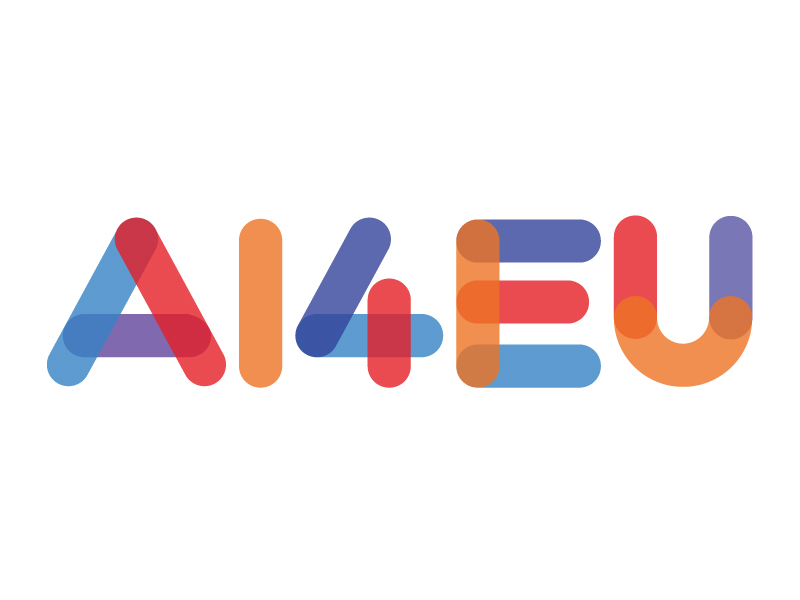
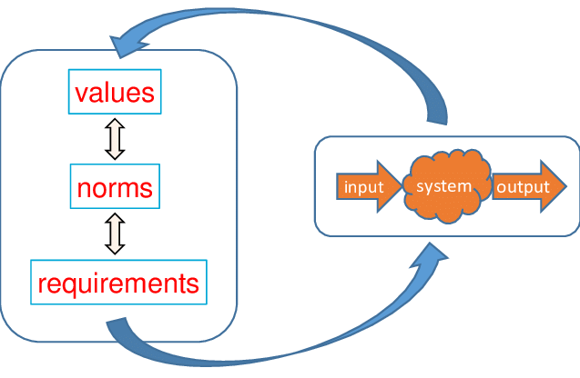
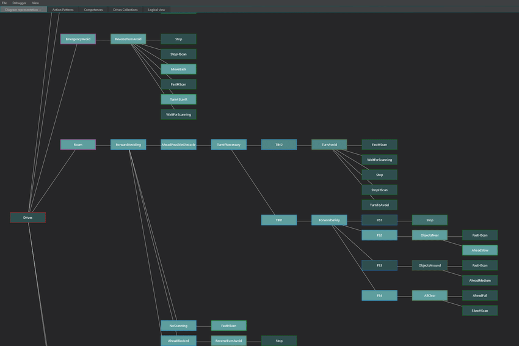

Research Overview
My research is mainly focused in responsible Artificial Intelligence. More specificially, I am looking at the social practices, computetional methods, and formalisms we need
to effectively audit, verify, and validate intelligent systems while also ensuring their trustworhniess and robustness.
My research spans accross multiple fields; including systems AI, cognitive architectures, knowledge representation, HRI, policymaking, and
moral philosophy.
Upcoming Talks & Events
For a full list, please consult the decidated page.
Research Projects
Dedicated pages for research projects to be made public soon.

AI4EU
Building Europe's first on-demand AI Platform.

Glass-Box V&V
Developing methods to verify and monitor the behavior of AI systems based on the observation in a continuously evolving societal optimum.

Transparency in AI
Creating tools that shows a simple, abstracted, real-time visualisation of a robot’s decision-making process.
RAIN
Details to be announced soon.
Recent publications
For a full list, please consult the decidated page.